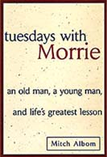

|
"That is a good book which is opened with expectation and closed
with profit."
--A. Bronson Alcott
"Tuesdays
with Morrie: An Old Man, a Young Man, and Life's Greatest Lesson"
by Mitch Albom
This
the true story of the last days of a wise college professor. When
Mitch Albom, a successful reporter, finds his former mentor dying
of a devastating disease, he returns once again to meet each Tuesday
as in college. Mitch visits with his professor, Morrie Schwartz,
on these precious Tuesdays to discuss the important things in
life as they did twenty years earlier. The result is a touching,
thought-provoking journey through the philosophy of life, death
and the search for meaning. Below are a few thoughts from the
book (Doubleday
1998).
Morrie Schwartz on Life:
- A
meaningful life will not be found in the next job or the next
car. The way you get meaning in your life is to devote yourself
to helping others and creating something that gives you purpose.
- The
culture we have does not make people feel good about themselves.
And you have to be strong enough to say if the culture doesn't
work, don't buy it.
- Everyone
knows they're going to die, but nobody believes it. If we
did, we would do things differently.
- Do
what the Buddhists do. Every day, have a little bird on
your shoulder that asks, 'Is today the day [that I will die]?
Am I ready? Am I doing all I need to do? Am I being the
person I want to be?
- Once
you learn how to die, you learn how to live.
- In
this culture it's so important to find a loving relationship with
someone because so much of the culture does not give you that.
But the poor kids today, either they're too selfish to take part
in a real loving relationship, or they rush into marriage and
then six months later, they get divorced. They don't know
what they want in a partner. They don't know who they are
themselves--so how can they know who they're marrying?
|
|
Links about the Book:
 Sparknotes Sparknotes
BookBrowse.com
Discussion
More
about Mitch
Morrie Schwartz
-
So
many people walk around with a meaningless life. They seem half-asleep,
even when they are busy doing things they think are important.
This is because they are chasing the wrong things. The way you
get meaning into your life is to devote yourself to loving others,
devote yourself to your community around you, and devote yourself
to creating something that gives you purpose and meaning.
-
Forgive
yourself before you die. Then forgive others.
-
...
I embrace aging… It's very simple. As you grow, you
learn more. If you stayed at twenty-two, you'd always
be as ignorant as you were at twenty-two. Aging is not
just decay, you know. It's growth. It's more than
the negative that you're going to die, it's also the positive
that you understand
you're going to die, and that you live a better life because
of it.
- ...There
are a few rules I know to be true about love and marriage:
If you don't respect the other person, you're gonna have a lot
of trouble. If you don't know how to compromise, you're
gonna have a lot of trouble. If you can't talk openly
about what goes on between you, you're gonna have a lot of trouble.
And if you don't have a common set of values in life, you're
gonna have a lot of trouble.
- Death
ends a life, not a relationship.

Find this book
on Amazon.com
|